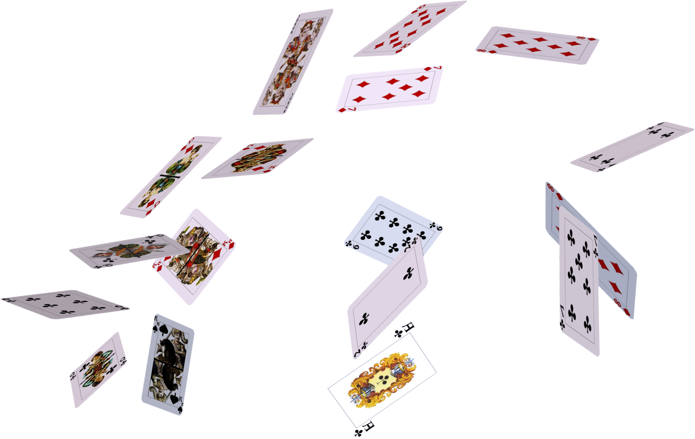

Finite Probability

As we enter week 12, the terrain becomes more familiar and less daunting. The topics now feel easier and more intuitive, as we delve into the familiar concept of combinatorics. This week, we are focusing on finite probability, which builds upon our earlier studies in combinatorial mathematics. The beauty of combinatorics lies in its straightforward yet profound principles, and applying these to probability theory has been a rewarding experience. This shift back to a more familiar territory has provided a much-needed reprieve, making the learning process smoother and reinforcing my understanding and confidence in the subject matter.
In the realm of finite probability, an experiment is a structured process designed to produce one outcome from a finite set of possible results. These experiments could range from rolling a pair of dice to determine the sum of the numbers rolled, selecting a card from a standard deck, or conducting a survey to gather data on a particular topic. At the core of such experiments lies the concept of the sample space, which represents the exhaustive collection of all possible outcomes that could occur. This sample space serves as the fundamental basis for analyzing probabilities in finite scenarios, providing a comprehensive framework for understanding the potential results of the experiment.
Within this context, events are subsets of the sample space that represent specific occurrences or combinations of outcomes with relevance to the observer. These events could encompass simple occurrences such as obtaining a particular result from a dice roll or drawing a specific card from a deck, as well as more complex occurrences like achieving certain outcomes in a statistical analysis or observing specific patterns in data sets. By defining events within the sample space, analysts can quantify the likelihood of various outcomes and assess the probability of specific events occurring within finite scenarios. This understanding of finite probability enables informed decision-making and analysis across diverse fields, ranging from business and finance to engineering and scientific research.
With this, we can solve some interesting problems such as finding a probability of a combination of hand from a deck of cards.
Problem: What is the probability that a card selected from a deck is an ace or a heart?
To address the problem, we initially identified two distinct scenarios: the selection of an ace (Event 1, denoted as E1) and the selection of a heart (Event 2, denoted as E2). Given that there are 4 aces and 13 heart cards in a standard deck, we computed the probabilities associated with each event as follows: the probability of selecting an ace (P(E1)) is 1/13, while the probability of selecting a heart (P(E2)) is 1/4. Acknowledging the possibility of a card being both an ace and a heart, we then calculated the probability of this overlapping occurrence, denoted as the intersection of E1 and E2 (P(E1 ∩ E2)), which equates to 1/52. Employing the addition rule of probability, we determined the probability of either selecting an ace or a heart (the union of E1 and E2, denoted as P(E1 ∪ E2)) to be 4/13. This systematic approach showcases the application of probability principles in delineating the likelihood of specific events unfolding within a finite sample space.